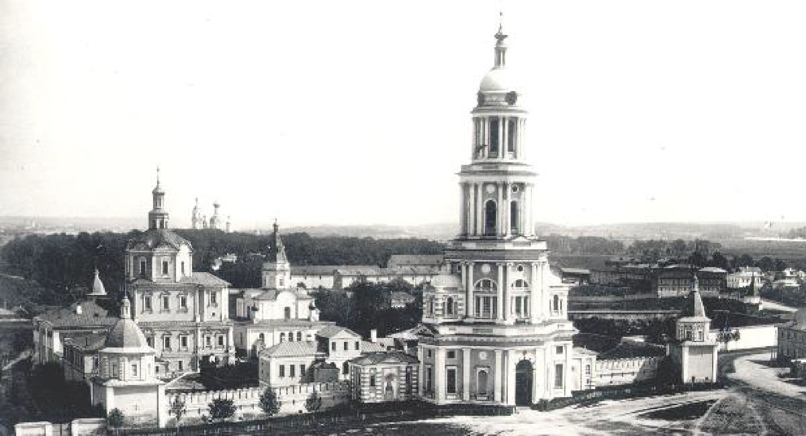

<!DOCTYPE html>
<html>
  <head>
    <meta charset="utf-8">
    <title>МУЗЕЙ ИМ. АНДРЕЯ РУБЛЕВА</title>
    <link rel="stylesheet" href="stylesheets/style.css">
  </head>
  <body>
    <section class="preload">
      <!--  -->
      <div class="white"></div>
    </section>

    <section class="main">

      <div class="logo">
        
      </div>

      <div class="layout">
        
        
      </div>

      <section class="column1">
        <ul>
          <li><p>О МУЗЕЕ</p></li>
          <li><p>НОВОСТИ</p></li>
          <li><p>КАЛЕНДАРЬ <br>ВЫСТАВОК</p></li>
          <li><p>ПОСЕТИТЕЛЯМ</p></li>
          <li><p>КОЛЛЕКЦИЯ</p></li>
          <li><p>ОБРАЗОВАТЕЛЬНАЯ <br>ДЕЯТЕЛЬНОСТЬ</p></li>
          <li><p>СТРУКТУРА МУЗЕЯ</p></li>
          <li><p>СМИ О МУЗЕЕ</p></li>
          <li><p>КОНТАКТЫ</p></li>
        </ul>
      </section>

      <section class="column2">
        <div>
          <ul>
            <li><p>ИСТОРИЯ <br>МУЗЕЯ</p></li>
            <li><p>АРХИТЕКТУРНЫЙ <br>КОМПЛЕКС</p></li>
            <li><p>СМИ О МУЗЕЕ</p></li>
          </ul>
        </div>
      </section>

      <section class="column3">
        <article>
          <h1>О МУЗЕЕ</h1>
          <h2>СПАСО-АНДРОНИКОВ МОНАСТЫРЬ / АРХИТЕКТУРНЫЙ КОМПЛЕКС</h2>
          <p>На протяжении XVI и особенно XVII-XVIII веках в монастыре ведется каменное строительство, возводятся стены и башни, надвратная Рождественская церковь, несколько корпусов.</p>
          <p>Позднее монастырь был связан с родом Лопухиных. По инициативе супруги Петра I царицы Евдокии Федоровны в 90-е годы XVII века к трапезной палате пристраивается многоярусный храм Архангела Михаила.</p>
          <p>Древний монастырский Спасский храм с многоярусным завершением относится к выдающимся образцам раннемосковского белокаменного зодчества наряду с Успенским собором в Звенигороде и Троицким собором Троице Сергиевой лавры. По всей вероятности, он сооружен во втором-третьем десятилетиях XV века. Позднее храм был разорен, но архитектура его интерьера до сих пор завораживает тонкостью пропорций и устремленностью в высь. Не исключено, что внутри собор имел резные детали, а его пол был декорирован узорными керамическими плитками.</p>
          <p>На протяжении XVI и особенно XVII-XVIII веках в монастыре ведется каменное строительство, возводятся стены и башни, надвратная Рождественская церковь, несколько корпусов.</p>
          
        </article>

      </section>

      <section class="column4">
        <p>
          ВРЕМЯ РАБОТЫ МУЗЕЯ:
          <br><br>
          ПН, СБ И ВС<br>11.00 - 18.00,<br>КАССА - ДО 17.15
          <br><br>
          ВТ И ЧТ<br>14.00 - 21.00,<br> КАССА - ДО 20.15.<br>
          В СРЕДУ МУЗЕЙ ЗАКРЫТ
        </p>

        <ul>
          <li><a href="">СПЛАНИРОВАТЬ ВИЗИТ</a></li>
          <li><a href="">МЕСТОПОЛОЖЕНИЕ</a></li>
          <li><a href="#">ЭКСКУРСИИ</a></li>
        </ul>
      </section>

      </section>
    </section>
  </body>
</html>
